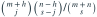
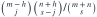
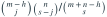

袋中m个好球、n个坏球。先不放回抽k个，已知其中h个好球；将这些好球改坏并把抽出的k个球全部放回。随后不放回抽s个，其中恰有j个好球的概率为（组合数越界视为0）？
- A

- B

- C
- D

我已思考，展开答案与解析
正确答案：B
- 标记后好球数m−h，坏球数n+h，总数m+n。
- 从剩余颜色构成中作超几何抽样，选j个好与s−j个坏即可。
- 若问至少r个好，对j从r到可行上界求和。
易错提醒“改为坏球并放回”与“移除好球”是两个模型。
考后回忆 · 条件重建 · 回忆14的一般表达式
依据考试回忆重建；数字、选项和必要条件为补充设定，非原题。